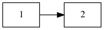
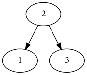

Functional Language Correctness
Introduction
What is Functional Programming?
If you already have experienced functional programming, or feel like you have a good grasp on its concepts, feel free to jump ahead to the next sub section on OCaml. This will only be review for you.
If you have never heard of functional programming, take some time to ponder on the design and don't jump to conclusions.
My first time using a functional language was much like my first time programming recursively. It was difficult to break out of my tendencies to write for loops. This comparison is especially relevant since functional languages usually encourage recursive thoughts and implementations.
Imperative programming views an operation as a transformation of internal state via side effects. To compute some value, a series of state transformations are executed until the answer is held in memory somewhere. This closely resembles a Turing Machine. On the other hand, functional languages view an operation as a composition of functions. A series of functions are composed to yield an answer for a given input. This closely resembles Lambda calculus.
Introduction to OCaml
If you are familiar with OCaml, feel free to jump to the next section now. Otherwise, I'd advise looking over the manual chapter 1. I'll summarize briefly the main points here.
Types
OCaml shares many types with traditional languages with one exception, the
array. While OCaml does allow arrays, it's much more common to use a list, which
is similar to a linked list. Links from one node to another is called cons
(infix :: is the cons operator) and the ending is [].
For example: 1::2::[] is equivalent to [1;2] which is equivalent to the linked
list:

Custom types can easily replace the notion of a struct.
type simple_pair = { a: int; b: char; };;
type simple_pair = { a : int; b : char; }
let s = { a = 1; b = 'x' };;
val s : simple_pair = {a = 1; b = 'x'}
Custom types can also be defined to represent disjoint sets of items (otherwise known as variant records). This can be very useful for concepts link a binary tree.
type int_btree =
| Leaf of int
| Node of int * int_btree * int_btree;;type int_btree = Leaf of int | Node of int * int_btree * int_btree
Let's define the binary tree:

with:
let my_tree = Node(2, Leaf(1), Leaf(3));;Node (2, Leaf 1, Leaf 3)
Pattern Matching
OCaml allows conditionals based on the structure / type of the input. This is especially powerful when used in conjunction with OCaml's type system, such as our previously defined binary tree. Suppose we want a simple function to check if our tree is empty.
let rec is_leaf t =
match t with
Leaf -> true
| Node (v,left,right) -> false;;let empty_example = is_leaf Leaf(1);;true
let other_example = is_leaf (Node(1, Leaf(2), Leaf(3)));;false
Functions as Arguments
A foundational concept of functional programs is that functions are first class
citizens. As such, they can be parameters to other functions. There is a common
function implemented by default in these languages called map.
map will take a function, f, and a list, l, applying f to every element in l.
let rec map f l =
match l with
[] -> []
| h::tl -> (f h)::(map f tl);;
Now, we can pass a function into map.
let add_one a = a + 1;;let map_example = map add_one [1; 2; 3];;val map_example : int list = [2; 3; 4]
Perspective of a Program
Suppose we want to find the maximum number of an array A with size n. How does
the programming language we use influence our implementation?
Imperative
As previously mentioned, in imperative programming, operations will usually
modify the program's state in some way. These state transformations are
performed in a specific order to obtain a desired result stored state. To solve
our problem, we initialize a location in memory to hold the maximum of every
subarray until this subarray is the entirety of A.
int max_arr(int* arr, int n) {
int max = arr[0];
while(i != n) {
if (arr[i] > max)
max = arr[i];
i += 1;
}
return max;
}If I were to ask you to write this program you would likely come up with the same result as mine — maybe using a different loop or conditional.
Functional
In functional programming, we view a program as a composition of functions. Instead of modifying internal state, we map values in the mathematical sense. To solve the maximum array problem, we define a recursive solution.
let rec max_list l =
match l with
| [x] -> x
| h::tl -> max h (max_list tl);;
We use the built in max function which takes two parameters and returns the
larger of the two, applying it to the list recursively.
But let's inspect what OCaml tells us about our new function.
Lines 2-4, characters 2-32: 2 | ..match l with 3 | | [x] -> x 4 | | h::tl -> max h (max_list tl).... Warning 8: this pattern-matching is not exhaustive. Here is an example of a case that is not matched: [] val max_list : 'a list -> 'a = <fun>
A fact that we overlooked in our imperative version is immediately evident in our functional version.
Reasoning Correctness & Edge Cases
Suppose this function max is more complex. Your team lead notices that this
function's correctness is vital to your customers so they want to ensure it is
correct. It's so vital, there should some sort of formal proof.
Imperative
We may prove this through a loop invariant. I see a loop invariant as a slight variation of induction. If this works for the base case (an array of a single element) and we prove that it works for any arbitrary \(k\) to \(k+1\), then we have proven it works for all cases.
int max_arr(int* arr, int n) {
int i = 1;
int max = arr[0];
// max is the maximum of subarray arr[0..0]
while(i != n) {
// max is the maximum of subarray arr[0..i-1]
if (arr[i] > max)
max = arr[i];
// max is the maximum of subarray arr[0..i]
i += 1;
// max is the maximum of subarray arr[0..i-1]
}
// max is the maximum value of subarray arr[0..i-1]
// i = n (from while loop condition)
// therefore, max is the maximum value of arr[0..n-1]
return max;
}This process is cumbersome and unwieldy for most industries and applications. Instead, something like a series of unit tests better fits this function. Yet, then we get into another conversation about which inputs to use for testing and something like the array of length 0 case could remain overlooked.
Let's say the empty array case is caught – it likely would be given max is not
very complex. How do we address it? Well, there are a couple of possibilities.
Given we are working in C, a fairly common solution is to return null or a value
outside of the expected range.
int max_arr(int* arr, int n) {
if (n == 0)
return NULL;
int i = 1;
int max = arr[0];
// max is the maximum of subarray arr[0..0]
while(i != n) {
// max is the maximum of subarray arr[0..i-1]
if (arr[i] > max)
max = arr[i];
// max is the maximum of subarray arr[0..i]
i += 1;
// max is the maximum of subarray arr[0..i-1]
}
// max is the maximum value of subarray arr[0..i-1]
// i = n (from while loop condition)
// therefore, max is the maximum value of arr[0..n-1]
return max;
}
But when functions call this, how do they know it may return NULL? There may be
a comment before saying, "returns NULL in the case that the array is length 0,"
but this isn't immediately evident to another programmer using the function. At
worst, it may go unnoticed until a runtime error occurs in production.
Imperative languages that could raise an exception can also hide the possibility
in some languages. Java's throws IllegalArgumentException is an example of an
ideal implementation. It forces callers to account for the possible failure.
Functional
We can trivially apply a formal proof in the same inductive form. Our function has the base case: a singular element list, and the recursive case: the maximum of a list is the maximum of the first element and the maximum of the remainder of the list. That is, if we didn't have this empty case.
OCaml address this by adding in an option type. This allows a function to
conditionally returning a value. Some represents an actual value, whereas None
represents failure to produce a value.
let rec option_max_list l =
match l with
[] -> None
| [x] -> Some x
| h::tl -> Some (max h (Option.get (option_max_list tl)));;val option_max_list : 'a list -> 'a option = <fun>
let empty_max = option_max_list [];;None
let some_max = option_max_list [1;2;3;4];;Some 4
Moreover, this returning an optional type forces functions that call it to
account for its possible failure. A programmer using the function is immediately
aware of the functions inabilities. From our recursive calls to option_max_list,
we have to use Option.get which requires Some or else an exception will be
raised. We can prove that we will always get Some from recursive calls quite
easily, so this will not arise.
You may already be familiar with the Option notion from some imperative
languages. These could be Nullable from C#, Option from Rust, or Optional from
Java. These were gathered from functional language's implementations.